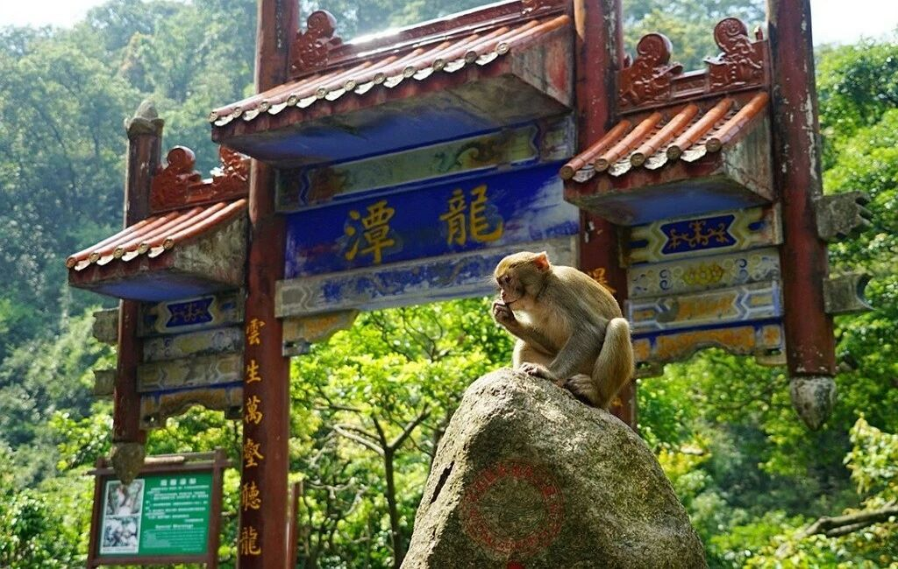

关于我
我的照片:

小小个，鬼精鬼精的，下面是我的标签哈
桂平风景名胜
桂平西山
桂平西山风景名胜区，国家AAAA级风景区、国家级地质公园。位于广西壮族自治区东南部桂平市区内，桂平西山以"石奇、树秀、茶香、泉甘"著名。峰峦嵯峨，数十乃至百余立方米的巨石叠嶂，中有怪石嶙峋，石径曲幽。石树参天，绿荫匝地，自然景观壮丽。西山茶名闻遐迩，清香可口，远销各地。泉甘历来为世人所称道。人们利用优质的乳泉水，酿制成了不少甘美的琼浆，有被誉为"广西茅台"的乳泉酒，有含对人体有益的多种微量矿物元素的"罗汉果露"等饮料，甘冽爽口。每值盛夏，乳泉边备有竹筒，供过往行人取水畅饮，舀一筒子泉水，慢慢啜饮，诚是一大乐事，被誉为西山一绝。
桂平龙潭公园
国家级森林公园。位于广西桂平市西北部金田林场林地内，南宁至梧州、柳州至玉林两条二级公路经过桂平市，距桂平市区18公里，交通便利，是丹霞地貌自然风景区。龙潭公园因有主要景点龙潭瀑布、龙潭峡谷而得名。龙潭公园总面积71平方公里，是广西桂东南唯一保存较完整的南亚热带季风常绿阔叶林。园内群山相拥，峰峦叠峰，怪石林立，形象迫真，峡谷、飞瀑、奇潭遍布，葱郁的森林，蕴藏着丰富动植物资源，有植物166科533属1093种，有圆籽荷、金花茶，木桫椤等国家保护珍稀植物十余种，动物有国家一、二级保护--瑶山鳄蜥、猕猴、穿山甲等十余种。公园以其秀丽多姿的自然景观、珍稀、罕见的植物和噙异兽，被誉为"孑遗植物宝库"和"小西双版纳"之称。成为人们观光旅游、休闲度假的胜地。主要景观有龙潭瀑布、龙潭峡谷、燕子潭、情侣山、仙翁垂钓、济公佛冠、树蕨群落、神龟探水、神驼会龙、绝壁奇松、深山猕猴、眺龙亭、引风亭、双翔亭等。

桂平中山公园
位于广西桂平市市区，原属明代京官马文祥私人花园，旧称马家园，后又称芥园、浔州公园，1936年辟为中山公园，迄今已有600多年历史。园内浓荫覆盖，古榕婆娑，花径回环，绿草如茵，桥影碧波，亭台错落有致，环境整洁幽雅，有各种大小乔、灌木约4万株，其中百年以上的古榕有40多株，珍稀名贵树有桂花、玉兰、银杏、水杉等，建有水上世界、游泳池，南门有美食茶廓、溜冰场、假山、喷泉、金鱼池、动物园等，还有童车、小火车、升降机、碰碰车、漂流船、游船、逸逸马等娱乐设施。逢节假日，游人如织，每年接待中外游客约30万人次，是桂平市主要旅游景点之一。
金田起义地址
金田起义地址为国家AAA级旅游景区、全国重点文物保护单位、红色旅太平天国金田起义地址(俗称金田营盘)，位于广西桂平市北部金田镇金田村西侧的犀牛岭上,距市区28公里,有二级游经典景区。1851年1月1日震惊中外址为田起义就爆发在在这里。1961年国务院公布太平天国金田起义地址为全国重点文物保护单位。金田起义地址是当年太平军誓师起义的地方，遗迹犹存，古松参天，绿草如茵，经多年建设，设施日臻完善，参观内容不断丰富，这里已成为人们瞻仰观光、学术研究，进行爱国主义教育的好场所。这里还建设了金田起义博物馆，馆内一幅幅生动的壁画，一个个金田起义中重大事件串联起来的模拟场景，其中包含金田起义的历史背景以及起义时和起义后的一些标志性事件，让人不知不觉融入到各个历史场景中，体验身临其境的感觉，这些画作是那个年代的真实写照。
桂平北回归线标志公园
北回归线标志公园位于广西桂平市城东约5公里石咀镇小汶村南梧二级公路旁，因公园建在北回归线上而得名，广西第一座北回归线标志塔就建在该公园内。回归线标志位于东经110°08'36"，北纬23°26'17"。此标志占地2462平方米，塔高17.2米，跨度26米，象征极线，犹如长虹般美丽的弧柱穿过象征地球的直径为6米的大球体，球体中间有一个10公分的窥阳孔。窥阳孔下睹骄阳，可真正领会到地球斜着身子在黄道十二宫之间转动，太阳直射在南北回归线之间摆动的大自然奥秘。太阳光经此孔直射在正下方“广西壮族自治区地图”的桂平点上。标志的东西方向嵌有宽5厘米，长20多米的北回归线标志指示线，也是热带与温带的分界线，站在这里，可以一只脚踩在热带上，另一只脚踩在温带上。站在标志正中的桂平点上发音，声音特别洪亮，好似使用麦克风一样，在该处相距32米的南北两地说悄悄话，竟似通电话般清晰，沿东—西弦线分别向外沿伸，洪亮贯顶的声音逐渐减弱，极为有趣。这是全球9个北回归线标志中唯一有强回音的标志塔。
桂平大藤峡风景区
大藤峡位于黔江下游，其出口处距桂平县城约8公里。峡以桂平、武宣两县交界的横石矶为入口，弩滩为出口，全长44公里，均在本县境内。峡的两岸奇峰耸峙，急流险滩时隐时现，陡坡、深谷、悬崖、峭壁、支流相间。夏日滩涛翻滚，洪波击岸；秋天碧波荡漾，江山传原有大藤如斗，横跨江面，昼沉夜浮，供人攀附渡江，故名。九层楼、仙人阁、三妹洞尤险，是明代大藤峡瑶、壮、汉各族农民起义活动的中心,是广西境内最典型的峡谷风景。明代，著名地理学家徐霞客游历到此，曾作《大藤峡游记》一文记之。
桂平市革命烈士纪念公园
桂平市革命烈士纪念公园位于桂平市区的西山风景区内,周边交通便利,经济区位较好。桂平市革命烈士纪念碑公园的整体结构为一带三区三珠，一带以公园南北贯通的主要交通线为带串联各主要景点，三区从南到北依次为林密幽景区、革命纪念区、廉政文化区，三珠为三区的核心景点，忠烈亭、革命烈士纪念碑、廉政苑。
桂平市东塔景区
明朝万历初年，知县刘万安倡建桂平东塔，到崇祯年间，东塔续建至九级。塔建距今已历400多年，是广西境内现存最高的一座古塔，1981年被定为自治区级重点文物保护单位。东塔在桂平市区东4公里、浔江岸边，隔江与宾山寺相对峙。明万历年间（1573一1620）知县刘万安建，成二级而卒。崇帧年间（1628-1644）御史李仲熊、知府葛元正增建成9级。 是我区目前保存最好的砖塔之一，享有“广西第一塔”之誉，登塔极目桂平风光尽收眼底。
桂平市罗丛岩景区
位于广西桂平市白沙镇境内，距城区约40多公里。（桂）广西浔州（桂平古称）安山（又名马鞍山）之罗丛岩，原名叫——古雅道观。罗丛岩座落于方圆五六公里的平原上，平地崛起石山9座，当中一座高70米，长350米，宽80米，座北朝南，状若履舟，罗丛岩山体内溶洞遍布，岩道通透，奇形怪状的钟乳石分布其间。被誉为道家七十二福地之一的“天南福地”——“罗丛岩月”是桂平八景之一。